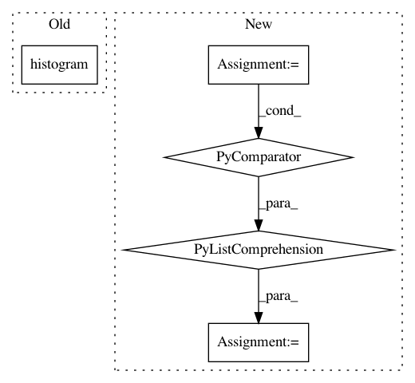

3c8df2fc218bd42544ac0eebb8dbfc6724c27a14,plantcv/plantcv/analyze_nir_intensity.py,,analyze_nir_intensity,#Any#Any#Any#Any#,15
Before Change
// Make a pseudo-RGB image
rgbimg = cv2.cvtColor(gray_img, cv2.COLOR_GRAY2BGR)
hist_nir, hist_bins = np.histogram(masked, bins, (1, maxval))
hist_bins1 = hist_bins[:-1]
hist_bins2 = [float(round(l, 2)) for l in hist_bins1]
After Change
rgbimg = cv2.cvtColor(gray_img, cv2.COLOR_GRAY2BGR)
// Calculate histogram
hist_nir = [float(l[0]) for l in cv2.calcHist([gray_img], [0], mask, [bins], [0, maxval])]
// Create list of bin labels
bin_width = maxval / float(bins)
b = 0
bin_labels = [float(b)]
In pattern: SUPERPATTERN
Frequency: 3
Non-data size: 5
Instances
Project Name: danforthcenter/plantcv
Commit Name: 3c8df2fc218bd42544ac0eebb8dbfc6724c27a14
Time: 2019-06-06
Author: noahfahlgren@gmail.com
File Name: plantcv/plantcv/analyze_nir_intensity.py
Class Name:
Method Name: analyze_nir_intensity
Project Name: andresriancho/w3af
Commit Name: 6d14ed3ffe70d30e10ceef52b17ffcb54a405b74
Time: 2018-02-09
Author: andres.riancho@gmail.com
File Name: w3af/core/controllers/profiling/scan_log_analysis.py
Class Name:
Method Name: show_connection_pool_wait
Project Name: andresriancho/w3af
Commit Name: 5b493d9e18f2798cbbfab1482941dd13563e772e
Time: 2018-02-08
Author: andres.riancho@gmail.com
File Name: w3af/core/controllers/profiling/scan_log_analysis.py
Class Name:
Method Name: show_connection_pool_wait